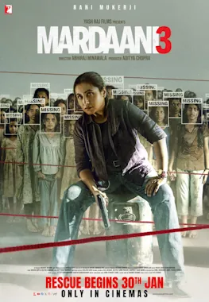

The genetics
The criminal secret behind the kidnappings is human experimentation with a modified virus. Ramanujan, who poses as a rescuer of exploited children, uses abducted poor girls as subjects for illegal tests of a mutated HPV virus, the virus that causes cervical cancer, intended to accelerate the trials of cervical cancer drugs; the infected girls develop cancer, and those found unsuitable are murdered. The film presents the experiments as an atrocity driven by the pharmaceutical race, exploiting children whose disappearance nobody investigates. The sources do not describe any scientist on screen; the villain is the organiser of the trafficking. At the end the heroine turns the virus on him, injecting him so that he will die slowly, a vigilante punishment the film presents as justice. HPV does cause cervical cancer, but over years or decades, and real trials never involve deliberately infecting people.
How genetics is portrayed
- Overall portrayal of genetics
- negative The modified virus is used in an atrocity of human experimentation on poor children for the pharmaceutical race.
- Outcome of the genetic intervention
- negative The infected girls develop cancer or are murdered, and the virus finally kills its sponsor.
- Ramanujan
- villain Aim: commercial (negative). Posing as a children's rescuer, he runs an operation that abducts poor girls for illegal tests of a mutated HPV virus to speed cervical cancer drug trials, and kills unsuitable girls; he is caught and dies of the virus.
- Shivani Shivaji Roy
- hero Aim: revenge (positive). The police officer injects Ramanujan with the same virus, a vigilante punishment the film presents as justice before rewarding her with promotion.
The story
In the third Mardaani film a diplomat's daughter, Ruhani, and her friend Jhimli are abducted. Senior police officer Shivani Shivaji Roy leads the case and finds that 93 girls aged eight or nine from poor families have vanished in three months, through a beggar mafia run by a woman known as Amma. The trail leads to Ramanujan, who runs a rehabilitation trust supposedly fighting beggar mafias; during a rescue operation he murders Ruhani, revealing himself as Amma's mole in the police. Suspended, Shivani continues and finds a missing girl dying of advanced cervical cancer. Pursuing Ramanujan and Amma to Colombo, she discovers that the girls were being used as test subjects in illegal experiments with a mutated HPV virus to speed up trials of cervical cancer drugs, and that unsuitable girls were killed. Amma dies trying to escape, the girls are rescued, and Shivani injects Ramanujan with the same virus, leaving him to die slowly.